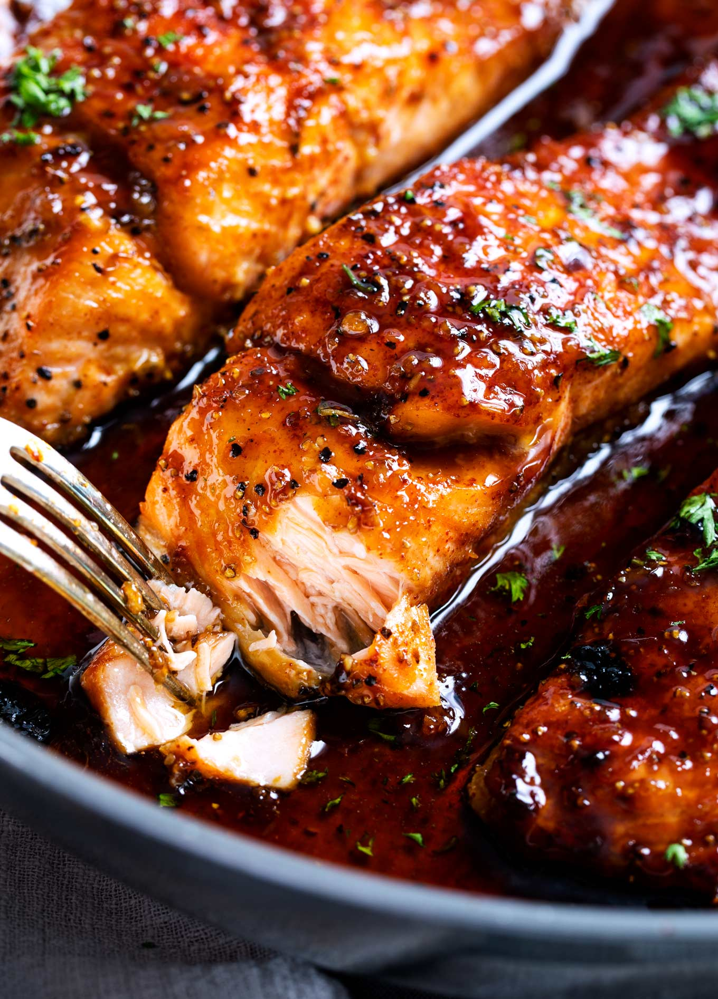

Honey Garlic Glazed Salmon

A Surprisingly Quick + Delish Salmon Recipe
Have you ever made a recipe that truly surprised you? Normally I’m not a huge salmon lover, but after one bite of this ultra tender salmon, I was absolutely in love. I literally did a little dance in the kitchen because I finally found a way that I can enjoy salmon!
We all know how nutritious salmon is… loaded with omega 3’s, high in protein and tons of vitamins, so I’m glad I can enjoy those benefits. And now, so can you!
You won’t believe how such a simple recipe can pack SO much flavor. Each bite is full of sweet and savory flavors and delicate textures.
INGREDIENTS
SALMON
- 4 (6 oz each) salmon filets
- 1/2 tsp kosher salt
- 1/2 tsp black pepper
- 1/2 tsp smoked paprika (or regular paprika)
- 1/4 tsp blackening seasoning (optional)
SAUCE
- 3 Tbsp butter
- 2 tsp olive oil
- 6 cloves garlic minced
- 1/2 cup honey
- 3 Tbsp water
- 3 Tbsp soy sauce
- 1 Tbsp sriracha sauce
- 2 Tbsp lemon juice
STEPS
- Pat salmon dry, then season with salt, pepper, paprika and blackening seasoning (if using). Set aside. Adjust oven rack to middle position, then preheat broiler.
- Add butter and oil to a large, oven-safe skillet over MED-HIGH heat. Once butter is melted, add garlic, water, soy sauce, sriracha, honey and lemon juice and cook 30 seconds or so, until sauce is heated through.
- Add salmon, skin side down (if using salmon with skin), and cook 3 minutes. While salmon cooks, baste frequently with sauce from the pan by spooning it over the top of the salmon.
- Broil salmon for 5-6 minutes, basting with sauce once during the broil, until salmon is caramelized and cooked to desired doneness.
- Garnish with minced parsley if desired.